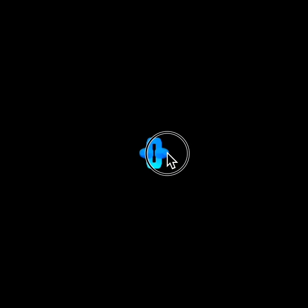

Lesson 4
Reflections
← Back to Home
In this lesson, you'll make shapes that mirror, or reflect, each other's movements.
The image below shows one line that follows the pointer and 3 more lines that reflect its movement.

1. mouseX and mouseY
Tinker
Click ▶Play. Then move the pointer around the canvas
by using your mouse or touchpad.
You should see a white ellipse that follows the pointer.
Can you figure out which part of the code tells the ellipse to follow the pointer?
Try these challenges:
Delete mouseX and type a number between 0-250 instead.
Click Play and move the pointer. What happens?
Click Revert to restore the previous script.
Add a 2nd ellipse with mouseY as the first argument
and mouseX as the second argument. Click ▶Play.
What do you see? Why?
Need help? Click mouseX and mouseY Help
at the right.
2. mouseX Again
Tinker
mouseX is called a variable.
A variable is a name that stands in for a number, word, phrase, or other value that changes.
For example, in this case the name mouseX stands in for the
mouse pointer's distance from the left edge
of the canvas, which changes every time you move the mouse.
When the computer sees the name mouseX, it calculates the mouse's distance from
the left edge and plugs in that number to use.
Try these challenges:
In the window below, move your mouse sideways from left to right. What happens to mouseX?
Now move the mouse sideways from right to left. What happens to mouseX?
Now move the mouse straight up and down. What happens to mouseX now?
3. mouseY Again
Tinker
mouseY is also a variable.
Its value is the mouse's distance from the top edge of the canvas.
In the window below, move your mouse from top to bottom.
What happens to mouseY?
Now move the mouse from bottom to top.
What happens to mouseY?
Now move the mouse straight sideways.
What happens to mouseY?
4. Change Size
Tinker
Click ▶Play.
Move your mouse sideways through the window below. What happens? Why?
Try these challenges:
Rewrite the code so that the ellipse's width changes when you move the mouse
up and down (instead of sideways).
Now rewrite the code so that the both ellipse's the height and width change when you move the mouse.
Make two side-by-side ellipses that look like eyes.
The height and width of the eyes should change when the mouse moves.
5. Twins
Tinker
Click ▶Play.
Move your mouse through the window below.
Notice that there are 2 ellipses.
Can you figure out how the code makes the second ellipse appear to the right of the first?
Try these challenges.
In the second ellipse,
change +100 to +20.
Then click ▶Play. What's different?
Try some other numbers.
Add a third ellipse that moves sideways with the mouse
but appears below the others.
Add a fourth ellipse that
moves sideways with the mouse but appears above the others. You'll need to subtract!
To subtract, use – instead of +.
6. Reflections
Tinker
Move your mouse through the window below.
The two dots reflect each other's sideways movement,
moving in opposite directions by the same amount.
In a moment, we'll write code to create this animation,
but first it's important to explore its logic.
Explanation
The green dot moves sideways with the mouse. Its x-coordinate is mouseX.
The blue dot moves sideways in the opposite direction. Its x-coordinate is 250-mouseX.
The number 250 is the width of this particular canvas in pixels.
A pixel is the smallest dot on the screen that can be seen or changed.
How do these settings create opposite movement?
We know that mouseX measures the distance from the mouse pointer to the left edge.
The calculation 250-mouseX subtracts that same distance from the right edge.
So the two dots are always equal distances away from their opposite edges, reflecting each other's sideways movement.
7. Reflections Again
Tinker
Click ▶Play.
Move your mouse through the window below.
Notice that there are 2 ellipses. The first ellipse moves with the pointer.
As the first ellipse moves sideways, the second ellipse moves sideways in the opposite direction by the same amount.
The two ellipses move up and down together. Why?
Try this challenge:
Change the code for the
second ellipse. When the first ellipse moves down,
second ellipse should move up by the same amount.
Don't change the sideways movement; the two ellipses
should still reflect each other when moving sideways.
8. Four Reflections
Tinker
Click ▶Play.
You'll see the two ellipses. The first ellipse moves with the pointer.
The second ellipse reflects the first one, moving in the opposite direction
sideways and vertically.
Try these challenges:
Add a third ellipse that moves sideways
with the pointer but moves in the opposite direction vertically.
Add a fourth ellipse that moves vertically
with the pointer but moves in the opposite direction sideways.
9. Transparency
Tinker
Click ▶Play.
The ellipses appear hollow and faded. If you use your mouse or trackpad to move the shapes slowly, they get brighter.
There are 2 new commands:
◆ noFill()
makes the inside of ellipses empty, or hollow.
◆ stroke(51, 100, 100, 0.2)
now has a fourth argument. This argument makes the stroke (outline) partially transparent,
so it appears faded.
Try these challenges:
In stroke, change the decimal 0.2 to
other decimals between 0 and 1. Find a decimal you like.
Change the stroke hue, or make it random.
10. Make Your Own Project
Tinker
To make and save your own project, you'll work in the p5.js Web Editor.
Copy the code below. You'll use it as a starter project.
Click this link to open the p5.js Web Editor
in another tab. A new project opens. If you haven't already signed into the
p5.js Web Editor, do so now.
Select all the code and press Delete
or Backspace to delete it.
Then paste the code you copied.
Rename the project "Reflections," or something similar.
Change the code to make an animation of your own.
Your animation should include two or more shapes like ellipses or rectangles
that reflect each other. If you need an idea, see the GIF image at the beginning of this lesson.
Have fun! üëè